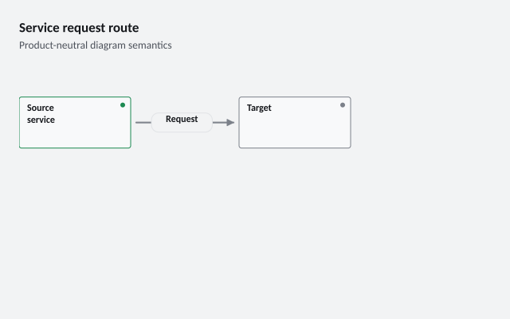
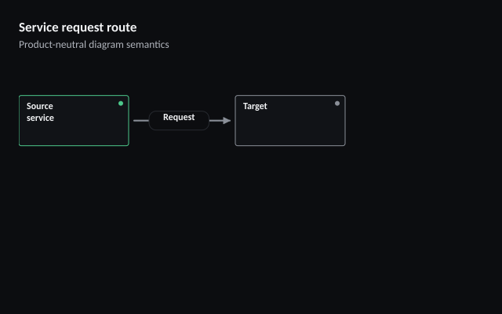

Preview


640 × 400 pixels
Create this example
Register the included Carlito font files to reproduce the exported typography.
using ChartForgeX.Primitives;
using ChartForgeX.Rendering;
using ChartForgeX.Themes;
using ChartForgeX.Topology;
using ChartForgeX.Typography;
using ChartForgeX.VisualArtifacts;
FontRegistry.Register("CFX Proof Carlito", "fonts/Carlito-Regular.ttf", 400);
FontRegistry.Register("CFX Proof Carlito", "fonts/Carlito-Bold.ttf", 700);
var model = CreateTopology();
var context = new VisualRenderContext(new VisualLayoutOptions(new VisualSize(640, 400)), VisualTheme.Graphite(), VisualThemeMode.Light,
new VisualFrame("Service request route", "Product-neutral diagram semantics", showLegend: false), FontSpec.FromFamily("CFX Proof Carlito"));
var prepared = model.Prepare(context);
System.IO.File.WriteAllText("diagram.svg", prepared.ToSvg());
System.IO.File.WriteAllBytes("diagram.png", prepared.ToPng());
static TopologyChart CreateTopology() {
var chart = TopologyChart.Create();
chart.Id = "service-request";
chart.Viewport = new TopologyViewport { Width = 640, Height = 400 };
chart.Nodes.Add(new TopologyNode { Id = "source", Label = "Source\nservice", X = 24, Y = 70, Width = 140, Height = 64, Status = TopologyHealthStatus.Healthy });
chart.Nodes.Add(new TopologyNode { Id = "target", Label = "Target", X = 300, Y = 70, Width = 140, Height = 64 });
chart.Edges.Add(new TopologyEdge { Id = "route", SourceNodeId = "source", TargetNodeId = "target", Direction = VisualLinkDirection.Forward,
Routing = TopologyEdgeRouting.Straight, LineStyle = TopologyEdgeLineStyle.Solid, Label = "Request" });
return chart;
}
using ChartForgeX.Primitives;
using ChartForgeX.Rendering;
using ChartForgeX.Themes;
using ChartForgeX.Topology;
using ChartForgeX.Typography;
using ChartForgeX.VisualArtifacts;
FontRegistry.Register("CFX Proof Carlito", "fonts/Carlito-Regular.ttf", 400);
FontRegistry.Register("CFX Proof Carlito", "fonts/Carlito-Bold.ttf", 700);
var model = CreateTopology();
var context = new VisualRenderContext(new VisualLayoutOptions(new VisualSize(640, 400)), VisualTheme.Graphite(), VisualThemeMode.Dark,
new VisualFrame("Service request route", "Product-neutral diagram semantics", showLegend: false), FontSpec.FromFamily("CFX Proof Carlito"));
var prepared = model.Prepare(context);
System.IO.File.WriteAllText("diagram.svg", prepared.ToSvg());
System.IO.File.WriteAllBytes("diagram.png", prepared.ToPng());
static TopologyChart CreateTopology() {
var chart = TopologyChart.Create();
chart.Id = "service-request";
chart.Viewport = new TopologyViewport { Width = 640, Height = 400 };
chart.Nodes.Add(new TopologyNode { Id = "source", Label = "Source\nservice", X = 24, Y = 70, Width = 140, Height = 64, Status = TopologyHealthStatus.Healthy });
chart.Nodes.Add(new TopologyNode { Id = "target", Label = "Target", X = 300, Y = 70, Width = 140, Height = 64 });
chart.Edges.Add(new TopologyEdge { Id = "route", SourceNodeId = "source", TargetNodeId = "target", Direction = VisualLinkDirection.Forward,
Routing = TopologyEdgeRouting.Straight, LineStyle = TopologyEdgeLineStyle.Solid, Label = "Request" });
return chart;
}